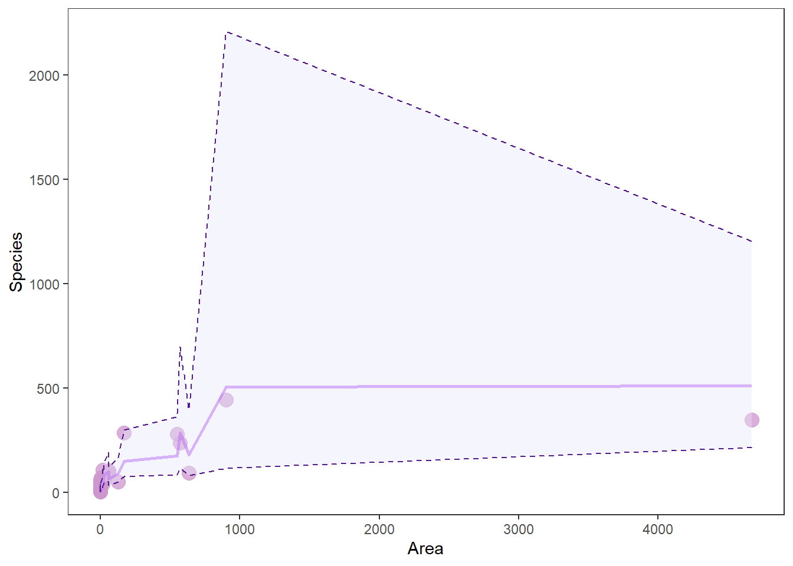
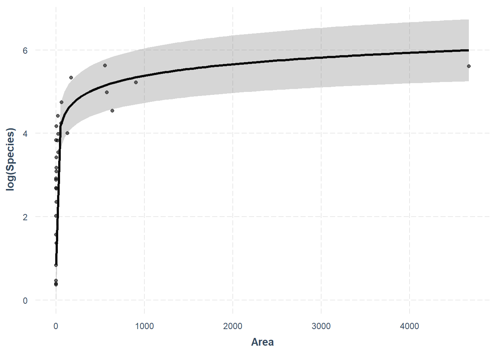

Model selection

Introduction
This week we are going to wrap up our discussions about linear models by looking at how to choose between them. In reality, our discussions and the exercises that we have been doing related to model diagnostics, interpretation, and selection apply broadly to a larger class of models of which linear models are a special case. So, we will continue to apply these tools during the next three weeks of lab. The objectives of this lab are to provide you with some tools for choosing between models (start thinking of these as competing hypotheses), and show you how to present the results of hypothesis testing within this framework. We’ll also use log-transformations in this lab as one way to “fix” non-linear relationships between X and Y.
By the end of this lab, you should 1) be comfortable fitting and interpretting linear models such as ANOVA, linear regression, and ANCOVA, 2) be able to state competing hypotheses represented by different models, and 3) be able to use modern tools to choose between competing hypotheses and make predictions that can be used to test the overall quality of your “best” model.
We’ll be working with the gala data from the faraway package this week, in addition to our usual pile of functions from the tidyverse and some new ones from the AICcmodavg package. You can go ahead and load those at the top of your homework code like this after you install any you don’t have.
We will also explore the effect_plot() function from the jtools package, which greatly simplifies prediction for multiple regression models.
# Mine is alphabetical - nothing magic
# about the order of these otherwise.
library(AICcmodavg)
library(faraway)
library(tidyverse)
library(jtools)Exercises
This week, we are going to work with some classic data from species counts on the Galapagos Islands. You can load the gala data from the faraway package once you have installed and loaded it. The data contains a bunch of explanatory variables that can be used to test hypotheses about how the number of Species and the number of Endemics on an island change in response to changes in other variables such as Area, Elevation, and distance from other islands.
The data explanation follows:
Species: number of plant species found on the island
Endemics: number of endemic species
Area: area of the island (km2)
Elevation: highest elevation of the island (m)
Nearest: distance from the nearest island (km)
Scruz: distance from Santa Cruz island (km)
Adjacent: area of the adjacent island (square km)
The citation for the paper is:
Johnson, M. P., and P. H. Raven. 1973. Species number and endemism: The Galapagos Archipelago revisited. Science 179:893-895.
It is available through the course website here.
Interpreting log-linear relationships
The first thing we will do this week is lay out an example to help you interpret regression analyses- just to make sure this concept is crystal clear. A major finding of Johnson and Raven (1973) was that the relationship between number of species number a given island and the area of the island was “non-linear”. This means that the number of species “levels off” or “asymptotes” at some point. That study used loge transformation to account for this. They tested whether the biological hypothesis was better supported than a linear relationship between number of Species and Area with the adjusted R2 statistic. We will use the data from Johnson and Raven (1973) to demonstrate this concept and we’ll follow loosely along with the analyses they did in that paper. We will make one important change by using the Akaike information criterion (AICc) for model selection since that was proposed shortly after Johnson and Raven (1973) published their seminal work.
Analysis
Let’s start by fitting a model. We will use un-transformed variables to diagnose assumptions of linear models before moving on to model selection and interpretation of the results. Fit a linear model that incorporates effect of Area on Species. Both variables are continuous, so this is a simple linear regression. Species should be your response.
Next, make a plot of the residuals for this model. If you are having trouble remembering how to do this, have a look back to Chapter 9.7.
Question 1. Based on your regression diagnostics, have you violated any of the assumptions of linear models here? Does anything else in the residual plot raise red flags for you? Again, if you are having trouble remembering what these are you can check out Chapter 9.2 in the text book.
Next, we will fit a model following the log-transformation used by Johnson and Raven (1973) to demonstrate how that works and how it affects our residuals.
Now, make a plot of the residuals from this model to see if it has resolved any of the issues you noted in your answer to Question 1.
Question 2. Based on the regression diagnostics for your new model, have you violated any of the assumptions of linear models?
Model selection
Now that we have looked at how the form of our model might change based on the underlying characteristics of our study system (or at least our assumptions about them), let us have a look at how we choose between competing hypotheses that attempt to explain the same phenomenon.
Let’s keep following the Johnson and Raven (1973) paper down the rabbit hole. To re-create their analysis.
Here are the four models from Table 4 in Johnson and Raven (1973):
# Note: the results will not be exactly
# the same because missing data in the paper
# were filled in here.
# Note also: we need to fix data point
# number 25 in Scruz because that is the
# island Scruz and we can't take the
# log of zero! We'll talk more about this
# when we get to count regressions
gala$Scruz[25] = 0.00001
# Okay, finally here are the models.
# S1 and lnS1 and S2 and lnS2 are identical
# except that both X and Y are log-transformed
S1 <- lm(Species~Area + Nearest + Scruz + Adjacent, data=gala)
lnS1 <- lm(log(Species)~log(Area) + log(Nearest) + log(Scruz) + log(Adjacent),
data = gala)
S2 <- lm(Species~Area + Elevation + Nearest + Scruz + Adjacent, data = gala)
lnS2 <- lm(log(Species) ~ log(Area) + log(Elevation) + log(Nearest) +
log(Scruz) + log(Adjacent), data = gala)Question 3. Look at the summaries for each of these models once you fit them. Does the general pattern in the R2 values for these four models follow what you might expect to see for the same models as they are presented in Table 3 from Johnson and Raven (1973)?
This paper was written before information theory became widespread, and in fact the study was done the year before Hiortugo Akaike published his seminal 1974 paper in which he revolutionized model selection (although he introduced the concept as part of a conference proceedings the year before).
Let’s see what would have happened if Johnson and Raven had waited a year to publish! We will compare the two best models from that paper to evaluate parsimony of the closely-ranked models. Note that we use the two best models in this case only because it is a no-no to use AIC or most other model selection tools on models that have different response forms so AICcmodavg::tab will throw an error if we want to do it that way. Again, things that weren’t (well) known at the time this study was conducted.
We will use the AICcmodavg introduced in class for this example, but recall that we could use the AIC function in R for this as well. Using the latter approach, you would have to calculate the sample-size corrected AICci, \(\Delta\)AICci, and wi manually. Let’s avoid that if we can here.
# You will need to make a
# list out of your models
mods <- list(lnS1, lnS2)
# Make sure you give it some names, too
names(mods) <- c('lnS1', 'lnS2')Now, use the aictab function to calculate model selection statistics for information-theoretic approach using AIC. If you’ve forgotten how to do this, you can Google it, or you can do:
Question 4. Is there a clear best model in this case? Defend your answer based on the general rules of thumb that we talked about in class, including \(\Delta\)AICc and the ratio of wi for the two models (see Chapter 11.5.3.3). Wow, I have too many subsections.
Now that we have a best model, clear winner or not, let’s go ahead and walk through how on Earth to plot the results of multiple regression using the lnS1 model from above.
At this stage, when faced with multiple linear regression you can either make predictions for a single X variable at a time while holding all others at their means by or using the fitted data and “confidence” intervals. The former is convoluted and ignores relationships between the X variables in our models (which we never checked!). More advanced methods allow us to consider those relationships, but require deeper understanding of the dreaded model.matrix() and [gasp] the even more dreaded variance-covariance matrix (which is so gross that most people are still ignoring it most of the time, sigh, it is actually super cool).
To make predictions from the observed data, we can do this. Just remember, this time our predictions are going to be on the log scale, so we’ll have to exponentiate them to show our predictions of species!
# Get predictions from the model
log_preds <- predict(lnS1, interval = 'confidence')
# Exponentiate the predictions
# We use apply() to apply the
# exp() function (FUN = exp)
# to each column (MARGIN = 2)
real_preds <- apply(X =log_preds, MARGIN = 2, FUN = exp)
# Combine predictions with the observed data
gala_preds <- data.frame(gala, real_preds)Then, we can plot them one at a time or all together like this.
# Make a pretty plot showing raw data and model predictions
ggplot(gala_preds, aes(x = Area, y = Species)) +
geom_point(colour = 'plum3', fill = 'plum3', alpha = 0.75, size = 4) +
geom_line( aes(y = fit), size = 1, color='purple', alpha = .5) +
geom_ribbon(aes(ymin = lwr, ymax = upr),
color = 'purple4',
fill = 'lavender',
alpha = .4,
lty = 2,
lwd = .5) +
theme_bw() +
theme(legend.position = "none", panel.grid = element_blank())
Wow, that looks like shit. And you know how I feel about shitty graphs. More importantly: why does it look like shit?
When we make predictions from the raw data, we don’t get nice smooth lines. Instead, we get crap that looks like this. This “crap” comes from the fact that there are other factors influencing Species that we are not showing here - exactly the problem with visualizing multiple regression. This is why we usually just plot our response Species one X (explanatory) variable at a time, and then assign the mean value to all the other X variables.
Thankfully, the jtools package will handle this for us really nicely.

What? How easy was that? As always, we give up a little control when we move further away from the base R functions, but this one is totally worth it in my opinion! Plus, we can still make it pretty with a little work. One thing we’ll give up for now is the ability to bring these predictions back off the log scale for Species. For a publication-quality figure that is easily readable we may want to leave effect_plot() behind or reconsider the use of strictly linear regression. We’ll wait until next week for that!
Finally…Go through and make one of these plots for each of the variables in your best model. Play around with it and check out the help file with ?effect_plot to see if you can figure out how to modify colors and other aesthetics.
Question 5. Report the results for the best model in sentence form using the managerie of summaries and plots you have created here. This should include:
(1) The t-statistic, significance of each explanatory variable (X, right side of equation) from output of the summary() function for the best model,
(2) the direction of relationships between explanatory variables and the response (Species)
Yay, no group means this week!
This work is licensed under a Creative Commons Attribution 4.0 International License. Data are provided for educational purposes only unless otherwise noted.